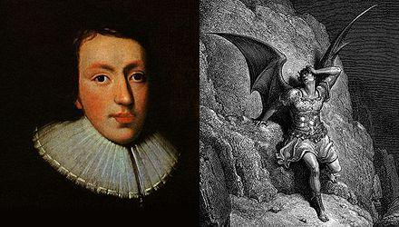

|
[1]
Stirling
A Scottish city half way between Glasgow and Edinburgh. A variant, written in 1724 is given in Wilkin's "Collection of Political Ballads (1860, vol II, p.206), reads "As le Devil o'er Lincoln was looking one day"
[2] Bloomsbury : an area of central London, now notable for its array of garden squares, hospitals, academies and museums. [3] Bow steeple : Steeple of Church Saint Mary Le Bow, one of the 51 city churches that Christopher Wren replaced following the Great Fire of 1666. [4] Brewer Like Willie Winkie's Testament and other ditties, this song is in "fancy Dutch". The word brewer could be for "promoter". In spite of these Dutch references, the stanza evokes the "Act of Settlement" (1701) as having prepared the present situation and makes sense only if the devil's ally is George II, instead of William III. [5] The Profane Swearing Act 1694 was an Act of the Parliament of England in effect from 1695 and repealed in 1746. It established a system of fines payable for "suppressing profane Cursing and Swearing". All convictions were to take place within ten days of the offence, and be recorded in a special book kept for the purpose. The Act was to be read four times a year in all parish churches and public chapels, with the parson or curate liable to a fine of 20s if this duty was neglected. The present song hints that the Act was in fact devised to set the clergy under control. [6] Cambrai alludes possibly to the treaty of Cateau-Cambrésis, 1559. Mary Tudor had waged a disastrous war against France. By the Treaty the English gave hopes of regaining Calais. |
[1]
Stirling
: Ville d'Ecosse, à mi-chemin entre Glasgow et Edimbourg. Une variante qui date de 1724 est donnée par Wilkin dans sa "Collection of Political Ballads (1860, vol II, p.206). Elle commence ainsi "Alors que le Diable contemplait un jour Lincoln".
[2] Bloomsbury : quartier du centre de Londres, aujourd'hui fameux pour ses nombreux squares, hôpitaux, institutions académiques et musées. [3] La tour de Bow : Clocher de l'église Sainte Marie Le Bow, l'une des 51 églises reconstruites par Christopher Wren après le grand incendie de 1666. [4] Celui qui m'a brassé : Comme le Testament de Willie Winkie's , cette chanson est en "faux-néerlandais". Le mot "brasseur" signifie peut-être "promoteur". Malgré ces références hollandaises, le couplet évoque "l'Acte de Dévolution" de 1701 comme l'origine de la situation présente et n'a de sens que si l'allié du diable est Georges II et non Guillaume. [5] The "Profane Swearing Act" : en 1694 un Acte voté par le Parlement anglais en 1794 entra en vigueur jusqu'à ce qu'il soit rapporté en 1746. Il établissait un système d'amendes visant à "réprimer l'usage des gros mots et des jurons". Tous les cas relevés devaient être jugés dans les dix jours et consignés dans un registre ad hoc. Le texte de l'Acte devait être lu 4 fois par an, dans toutes les chapelles publiques et églises paroissiales, par le curé ou son vicaire sous peine d'une amende de 20 shillings en cas d'oubli. Le présent chant laisse entendre qu'il s'agissait en fait d'une vexation à l'usage du clergé récalcitrant. [6] Cambrai : désigne peut-être le traité de Cateau-Cambrésis, 1559. Marie Tudor s'était engagée dans une guerre désastreuse contre la France et par ce traité les Anglais renonçaient définitivement à Calais. |
|
|
|
2° The Devil and George Milton
A song on George II from "The True Loyalist", page 93, 1779
|
About the lyrics:
There is a strong family likeness between this song and the previous, the only difference being that George II and Cumberland (Willie) have replaced William of Orange. "George Milton" is of course King George II involved in a dialogue with the devil after John Milton (1608 - 1674)'s fashion in "Paradise Lost". Staging Beelzebub is, to be sure, the only feature this amusing piece of doggerel has in common with its sublime model. This version also appears in a "Collection of Royal Songs" (1750, p. 62). The variant in column 2 is found in the "Towneley Hall MSS" edited in 1877 by the Rev. A.B. Grossart (page 14). Only the stanzas 4 and 5/6 are substantially different. |
 |
A propos du texte:
Il y a un air de famille indéniable entre ce chant et le précédent. la seule différence est que Georges II et Cumberland (Guillot) y remplacent Guillaume d'Orange. "George Milton" est, cela va sans dire, le roi George II qui dialogue avec le diable comme dans une scène imaginée par John Milton (1608 - 1674) dans "le Paradis perdu". La mise en scène de Belzébuth est certainement la seule chose que ces amusants vers de mirliton ont en commun avec leur sublime modèle. Cette version est celle que l'on trouve dans "Collection of Royal Songs" (1750, p. 62). La variante de la colonne 2 fait partie du "manuscrit de Towneley Hall", publié en 1877 par le Rév. A.B. Grossart (page 14). Seuls les couplets 4 et 5/6 présentent des différences notables. |
|
THE DEVIL AND GEORGE MILTON
Tune, A Cobbler there was &c. 1. As the Devil was marching o'er Briton's fair isle, George spy'd in his phiz a particular smile And cries: - My old friend, if you leisure to tarry, Let's have an account of what mkes you so merry. Derry down, down, down, derry down. 2. Old Beelzebub turn'd, at a voice he well knew, And, stopping, cry'd: - Oho! brother George, is it you? Were my bus'ness of consequence ever so great, I always find time on my friends for to wait. Derry down, &c. 3. At sev'n in the morning I set out for Rome, Most fully intending 'fore now to been home. - Stay, cousin, says George, and takes hold of his hand, You know that St James is at your whole command. Derry down, &c. 4. Oh! What says the Pope? our Monarch went on, And what does he think of my enemy's son? - When I first came there, his companion reply'd, I own he had mighty great hopes on his side. Derry down, &c. 5. Dejected I heard the sad news I must own, I thought our affairs would be turned upside down; Were a St[uar]t to govern old England again Religion and honesty then too would reign. Derry down, &c. 6. But soon from the North there arrived an express, I thought my self almost at heav'n I confess Defeated was C[harle]s, his forces all flown, I thought, on my soul, I would leap'd o'er the moon. Derry down, &c. 7. I oftentimes visit at France and at Spain, To talk with my princes, and see how they reign; But, of all my good kings, South, East, North and West, I speak it sincerely, G[eorg]e, you are the best.- Derry down, &c. 8. Our monarch reply'd, (looking wise as an ass): - Come, none of your compliments , take up your glass; Tho' the trouble I give you be not much I own, For, as to religion, you know, I have none. Derry down, &c. 9. Look down on my offspring, there's F[ec]kie my son, Who you wish, and I wish, may come to the throne: For, by all men of wisdom and sense it's allow'd He'll do you no ill, if he do you no good. Derry down, &c. 10. Here's W[illi]e, thy darling, my best belov'd boy, Can ravish, and murder, can burn and destroy; Treads honour, and mercy, and faith on the ground, Now, where's there another such imp to be found? Derry down, &c. 11. Who never felt compassion or shame in his life, I would think him your own, could I doubt of my wife, With all kind of vice by Nature he's stor'd, And religion sha'nt spoil him, I give you my word. - Derry down, &c. 12. The parley thus ended, they both bid Adieu! And Beelzebub mutter'd these words as he flew: - May Heaven grant thee and thy race to reign on, For the Devil can't find such a sett when your gone! - Derry down, &c. |
WRITTEN IN 1747:
A Song 1. As the Devil was walking our Britain's fair Isle, George Spy'd in his face a particular smile, And said, My old freind, if you've Leizure to Tarry Let's have an Account of what makes you so merry. Derry &c. 2. Old Belzebub turned at a voice he well knew, And Stoping cry'd oh ! Brother George is it you, Were my business of consequence ever So great, I always find time on my friends for to wait. Derry, &c. 3. This morning at seven I set out from Rome, Most fully intending eer this to have been home; Pray stay Sir, says George, & took hold of his hand, you know St. James's is at your Command. 4. Pray what says old James, our great monarch begun, And what does he think of his brave gallant Son; Why when first I beheld him, old Satan reply'd, He seemed to have very great hopes of his Side. 6. Of Great Charles's descendants I am only afraid, Against my Dominions their projects are laid, Leave a Stuart to govern Old England again, Religion and Honesty then too might reign. 5. But soon from the North there arrived an Express, With papers that gave me great joy I confess, Defeated was Charles & his forces all gone, I thought on my Soul I should leap o'er the moon. 7. I often trip over to France and to Spain, To visit my Princes and see how they reign, But of all my good Servants North, East, South & West, I speak it sincerely George thou are the best. 8. George pleased with the Compliment, smiled like a fool And bowing said Sir I hope you dont flatter your Tool, Tho' the trouble I give you is not much I must own, For as to religion you know I have none. 9. Then as to my Offspring there's Freddy my Son, Whom you wish & I wish may come to the throne, for by all men of Wisdom & Sense 'tis allowed, If he does there no harm, he will do there no good. 10. Then there's Billy my Darling and Blood thirsty Boy, He'll ravish, and plunder, burn, kill & destroy, I need say no more for you know very well; That Murder's a virtue in which he excells. 11. They shook hands at parting and both bid adieu, Old Belzebub muttered these words as he flew, May Thee & thy race for ever reign on, For the Devil can't find such a race when you've gone. |
LE DIABLE ET GEORGES MILTON
Sur l'air de Il était un savetier, etc. 1. Le diable parcourait notre Île un beau matin Quand Georges remarqua son sourire bizarre. "Arrête-toi, crie-t-il, un moment, vieux copain, Et raconte-moi donc ce qui te rend hilare!" Ding ding dong, dong dong, ding ding dong. 2. Belzébuth se retourne, entendant cette voix Familière et s'arrête: "Oh, Georges, quelle chance! Mes affaires, tout importantes qu'elles soient, Sur mes amis jamais n'auront la préséance. Ding ding dong, etc. 3. Je voulais être de retour dès à présent, Parti pour Rome, ce matin, vers les sept heures." "Reste, cousin, lui dit George, lui saisissant La main, Saint-James, tu le sais, est ta demeure." Ding ding dong, etc. 4. "Le Pape, que dit-il? reprit notre monarque, Et que pense-t-il du fils de mon ennemi?" "Dès la première fois, fit l'autre, je remarque Les immenses espoirs que l'on fondait sur lui. Ding ding dong, etc. 5. Et les tristes nouvelles que j'apprends m'atterrent. Il allait mettre à bas tout ce que j'ai construit. Qu'un Stuart à nouveau règne sur l'Angleterre, Et c'est l'honneur, la foi qui rentrent avec lui. Ding ding dong, etc. 6. Mais bientôt arrive un pli de l'Hyperborée - Et nul bonheur jamais ne fut égal au mien. Charles était vaincu, ses forces dispersées J'aurais bondi jusqu'à la lune, je crois bien. Ding ding dong, etc. 7. Je rends souvent visite à l'Espagne, à la France, Pour parler avec ces Princes selon mon cœur. Mais dans tout l'univers je vois qu'à l'excellence Ne parvient qu'un seul roi. Georges est le meilleur." Ding ding dong, etc. 8. Notre roi répondit, pontifiant comme un âne: "Bois ton verre, et ne fais pas tant de compliments. Je ne compte pour rien le mal que je te donne Car je n'ai pas de religion, tu le sais bien. Ding ding dong, etc. 9. Regarde mes enfants, il y a mon fils Fecky Dont tu souhaites comme moi qu'il règne un jour. Les hommes de bon sens tiennent pour établi Qu'il n'agira jamais, ni contre toi, ni pour. Ding ding dong, etc. 10. Et puis, il y a Guillot, mon petit préféré Qui sait violer, tuer, incendier et détruire, Fouler aux pieds la foi, l'honneur et la pitié. Vit-on jamais la terre un tel monstre produire? Ding ding dong, etc. 11. Honte et compassion n'ont de prise sur son âme. Je le croirais ton fils, à le voir si vicieux Si je ne faisais pas confiance à ma femme. Lui, crois-moi, ses soucis n'ont rien de religieux." Ding ding dong, etc. 12. Sur ces mots sentencieux cet entretien s'achève Mais Belzébuth avant de partir a ce mot: "Régnez longtemps! Car je n'ai pour votre relève, Rien de si terrifiant aux greniers infernaux." Ding ding dong, etc. (Trad. Christian Souchon (c) 2011) |